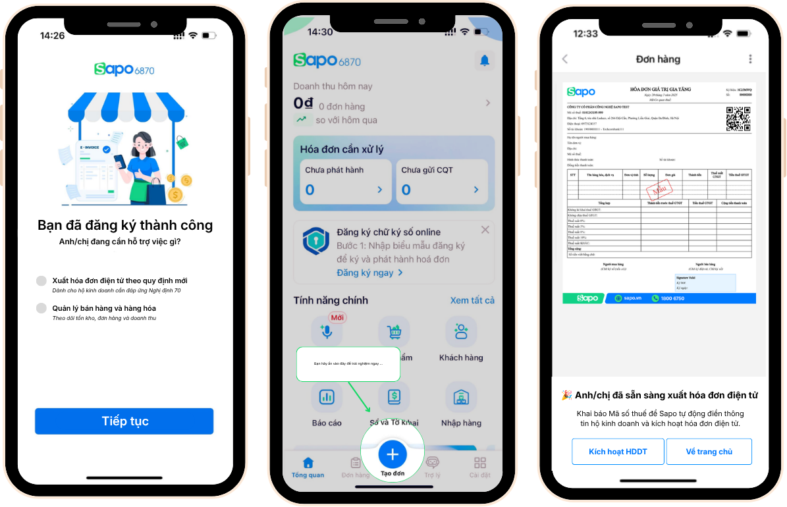
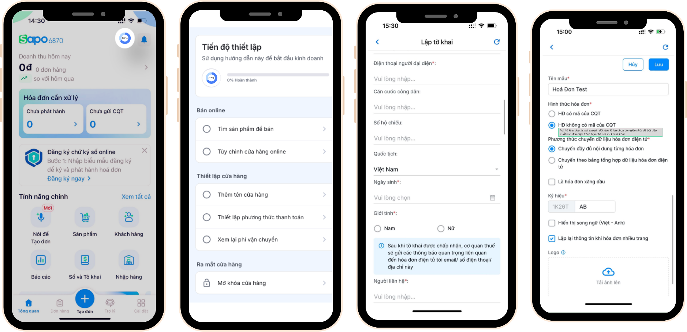

TARGET / PROPOSED IMPACT
16% → 22%Target Trial-to-Paid
+20%Target Onboarding Completion
-30%Target Support Tickets
1-2 daysTarget Time-to-Value
Project Background
The Context
Regulatory change was pushing millions of Vietnamese household businesses toward digital invoicing, tax declaration, and digital record keeping. For SAPO, this created a new customer segment: traditional merchants entering digital tools because they had to, not necessarily because they wanted to.
The Challenge
How might SAPO help first-time digital merchants reach value before complex compliance setup causes them to drop off?
Context
Adoption wasn't voluntary.
Nghị định 70 and the transition away from presumptive taxation were pushing household businesses toward digital invoicing, tax declaration, and digital record keeping.
For SAPO, this created a new kind of customer: merchants entering digital tools because they had to comply, not necessarily because they wanted to digitize their business.
Increase in trial sign-ups
↑
Decrease in trial-to-paid
28% → 16%
The regulation created acquisition. The product still had to create activation.
Customer Segmentation
More complex F&B / service businesses
Traditional self-operated retail
Next-generation / systematic retail
We didn't need to design for every merchant.
Traditional self-operated retail merchants faced the strongest compliance pressure, the largest technology barrier, and the strongest fit with SAPO 6870's mobile-first proposition.
Strategic decision
Prioritize the segment with the highest urgency and strongest product fit rather than trying to serve every merchant equally.
Key User Findings
We carried out 10 semi-structured interviews and collected 50 survey responses during the research phase.
Quantitative findings
The survey revealed where merchants were dropping off and what they expected to experience before committing.
Dropped after trying software
40% of surveyed household businesses had previously tried software but abandoned it because the legal declaration process felt too complex.
Dependent on vendor support
50% felt dependent on the software provider's support team during onboarding.
Wanted compliance features during trial
67% wanted to experience tax declaration and electronic invoicing during the trial period.
15% did not know what to do without Sales guidance.
Qualitative findings
10 semi-structured interviews at merchants' points of sale helped explain why these onboarding barriers existed.
Regulation triggered the search for software.
Most interviewed household businesses only began exploring software after Nghị định 70.
Compliance was the job to be done.
Tax declaration and electronic invoicing were the highest priorities when choosing software. Many interviewed merchants still saw e-invoicing primarily as a mandatory compliance tool rather than a source of operational value.
Merchants were afraid to get tax declaration wrong.
Interviewed merchants wanted software providers to guide them through tax declaration, particularly at the beginning, because they did not feel confident doing it alone.
Regulation created urgency. Compliance defined the immediate job to be done. But fear and dependency prevented merchants from reaching value independently.
The onboarding problem wasn't simply teaching users how to use SAPO. It was helping them feel confident enough to continue without human assistance.
The Aha Moment
Show value before asking for effort.
Product Hypotheses
Three hypotheses shaped the redesign.
Value before configuration
Showing a real outcome early will increase users' motivation to finish setup.
Monetize after the aha moment
Ask users to activate/pay only after they have experienced the invoice workflow.
Replace legal anxiety with contextual guidance
Translate legal terminology into business language and provide help where users become uncertain.
The Solution
Three interventions reduce friction at different moments.
Demo order + sample e-invoice
Users see the final outcome before completing difficult setup.
Product rationale: Reduce Time-to-First-Value and create confidence before commitment.

Digital signature + OCR ID + payment in one flow
Product rationale: Reduce manual entry and Sales dependency.
AI assistant + contextual guidance + setup checklist
Product rationale: Help users understand what to do and why it matters.

Success Metrics
These were proposed success criteria for validating the redesigned onboarding strategy, not post-launch results.
Baseline: 16%
Target: 22%
Target improvement
Target reduction
Target range
What I Learned
Activation is emotional as much as functional
For reluctant users, adding more functionality does not necessarily increase adoption. Reducing uncertainty can matter more.
Time-to-value should shape onboarding
The product should not make users earn their first moment of value through configuration.
Segmentation is a product decision
Trying to serve every merchant would have weakened the proposition. Choosing traditional self-operated retail clarified what the experience needed to optimize for.